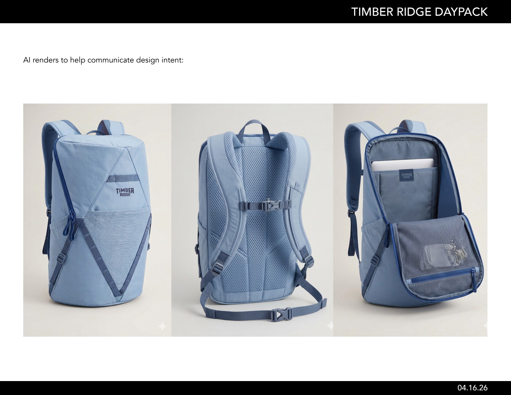
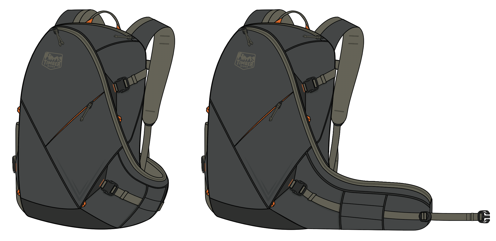

Timber Ridge · daypack concept review
A sharper 26L daypack direction, built from the latest three attachments.
This deck combines the current spec brief, the latest CAD view set, and sketch exploration into one image-first review. The brief anchor is the newest file, TimberRidgeDaypack_Specs_041626.pdf.
Image heavy · frontend slides format · GitHub served




Source stack: TimberRidgeDaypack_Specs_041626.pdf · TR Daypack CADs W5.2.png · DaypackSketches_01.pdf